Speakers
I discovered NixOS while looking for fleet management systems 10 years ago and contribute since then.
Jeremy has both a technical and a strategic streak. Passionate about people and entrepreneurship, integration and automation. He likes to work on tough, interesting problems that have a high impact (and to have fun while doing it). Jeremy is happiest when he's collaborating, learning, and sharing. DevOps, CI/CD, Platform Engineering, and automation are particular interest areas.
Software engineer with a passion for Developer Experience, currently at Anthropic. Proud Nix user since college, now using it at work!
Usman is a Senior Developer Advocate at Grafana Labs from Nuremberg, Germany. He works with the Open Source community on the community forum, GitHub and Slack.
He has over 15 years of experience in IT and in Cloud Support where he served multiple customers all over Europe, US, Japan, etc.
He is an active international public speaker participating in multiple conferences and events.
In his free time, Usman likes to spend time with his family, go out on occasional...
Bronwen Aker (M.S. Cybersecurity, GSEC, GCIH, GCFE) likes to describe herself as a “constantly evolving geek.” She has worked with computers since the dark ages when she was introduced to FORTRAN and bubble cards. These days, Bronwen works for Black Hills Information Security (BHIS) as a member of the Continuous Pen Testing team (AntiSOC), an AI researcher, and technical editor. When not working, she spends time playing with her dogs, LLMs, and studying data science.

Hamid worked extensively on PostgreSQL for more than 12+ years now. As an architect and developer, he's working on multi-active solution with pgEdge, In the past, he's also worked on transparent data encryption, the observability extension (pg_stat_monitor), ORC FDW, and an auto-tuner for PostgreSQL. He has also managed the official PostgreSQL installers.
At pgEdge, Hamid contributes to developing the Spock extension, enabling active-active...
__q_itok=IKFj0pA0.jpg)
Product Manager for MicroCloud and LXD at Canonical. Her mission is to build a next-generation private cloud infrastructure that ‘just works’. Prior to Canonical, she spent years in telecommunications, leading modernization initiatives in OSS, infrastructure and data centre domains. She has an M.Sc. in Technology Management from Seoul National University.
Lenin Alevski is a Full Stack Engineer and generalist with a lot of passion for Cybersecurity. Currently working as a Security Engineer at Google. Before joining Google, Lenin worked at MinIO, OneLogin, Oracle and Websec Mexico as an appsec engineer, software engineer, security consultant and penetration tester. Lenin loves to play CTFs, contributing to open-source and writing about security and privacy on his personal blog.
Dr. Nikki-Rae Alkema, Doctor of Physical Therapy, is an orthopedic and pelvic health licensed physical therapist with a passion for improving quality of life through movement. In 2022, she received the esteemed Excellence in Biomechanics Award from the Doctor of Physical Therapy program at California State University, Long Beach. She believes in the power of using technological innovation to provide accessible and equitable healthcare. Some of her areas of special interest include Parkinson’...
Joe is a Staff Software Reliability Engineer at Subsplash focusing on Kubernetes infrastructure and pretty much everything else hidden behind the curtain that no one wants to talk about.

Andrew is a highly skilled engineer and a former member of the Canadian Armed Forces.
With close to 20 years of experience in security and threat intelligence, he has an impressive track record.
As a former Technical Operations Agent and Senior Manager of the Counter Terrorism\Proliferation Technology Group at the Canadian Security Intelligence Service (CSIS), Andrew continued to excel in his security career at the National Head Quarters (NHQ) and the Ottawa Regional office....
Jimmy Angelakos is a Systems and Database Architect and recognized PostgreSQL expert who has worked with, and contributed to, Open-Source tools for 25+ years. He is passionate about participating in the community, is a Contributor to the PostgreSQL project, and an active member of PostgreSQL Europe. Jimmy is a regular speaker at conferences and events, sharing his insights with the community. Author of ...
CEO @ Sentinel.la. Computer Science Engineer from Chile with a vast experience on R&D and Cloud. I've deployed and worked with OpenStack clouds on production for 10 years. Followed by the desire to continue innovating and supporting OpenStack we founded Sentinel.la to help solve the main OpenStack pain points from a user's perspective in the real world from Chile and Mexico to Latin American markets, narrowing the gap between "everything works" in architecture and the...

Boaz Ardel
eBay, SRE
Experienced Site Reliability Engineer with mission-critical applications and working in large complex production
environments. Passionate about new technologies and challenges for building scalable and resilient systems. With 8 years of hands-on experience in development, cloud, service mesh, and networking. Willing to engage and deliver some of my insights to the community.
Fay Arjomandi is the Founder, CEO, and Board Member of mimik, a pioneering hybrid edge cloud company. She previously served as CEO of NantMobile and Vodafone xone, leading digital health, AI, and innovation initiatives. A serial entrepreneur, she co-founded three technology startups, including Mobidia and mimik. Fay holds multiple patents in telecommunications, edge computing, and mobile networks. Recognized as a Top 20 Canadian Tech Titan (2022) and Edge Woman of the Year (2020), she is a...
As a seasoned production engineer with a strong background in Kubernetes, public cloud infrastructure, and large-scale AI/ML clusters, I bring a unique blend of technical expertise and real-world experience to the table. With a proven track record of designing and operating complex systems at scale, I'm passionate about sharing my knowledge and collaborating with the community to drive innovation in the world of container orchestration and open source technologies.
__q_itok=p_cXwaa9.jpg)
Murat Aydemir is a cloud security architect with a strong background in offensive security, specializing in both dynamic and static analysis techniques to identify vulnerabilities. Renowned for discovering over 30 CVEs and identifying zero-day vulnerabilities, he leverages his expertise in both offensive and defensive security to secure AWS environments while continuing his research in offensive techniques targeting cloud infrastructures. He is a big fan of Serverless concept, embracing its...
Interested in formal methods, Haskell, Lean, type & category theory, and computational photography!

Daniel is engineer and mathematician turned software developer. He is passionate about reproducible build systems.

Tarus Balog has been involved in managing communications networks professionally since 1988, and unprofessionally since 1978 when he got his first computer - a TRS-80 from Radio Shack. After being kicked out of some of the best colleges in the country, and a short stint in telecom, he founded an open source-focused company and ran it for twenty years. Once that company was sold, he started working at Amazon Web Services with the goal of making AWS the most welcoming place to run open source...
-600x600%20px__q_itok=4rHOB1-3.jpg)
Patrick Beaucamp is founder of the Vanilla project, the only true Open Source Business Intelligence Platform, and Data4Citizen, one of the leading Open Data Platform
Patrick is Ceo of Bpm-Conseil, the company behind the Vanilla and Data4Citizen projects.
Patrick is a teacher in university to address data visualisation and search engine topics, and chairman of a chair : https://icom.univ-lyon2.fr/institut/gouvernance...
Life-long engineer. Worked at Google, flew jet planes in the Marine Corps, trained cyberware teams, formed and led teams to perform rapid hardware and software capability development, worked with the Digital Service to bring modern software practices to the DoD and government. Left the service to create a contracting startup bringing AI/ML products to DoD. Throughout have found a consistent set of challenges in the course of development; also found a set of superpowers to address those...

Life-long engineer. Worked at Google, flew jet planes in the Marine Corps, trained cyber-teams, formed and led teams to perform rapid hardware and software capability development, worked with the Digital Service to bring modern software practices to the DoD and government. Left the service to create a contracting startup bringing AI/ML products to DoD. After several iterations of applying the Nix ecosystem in various teams, the difference was stark. This led to the desire to bring this set...
Josh Berkus spends his time messing around with containers, automation, and community-building for Red Hat Inc. Prior to that, he spent nearly two decades working on PostgreSQL. From his home in Portland, he cooks, makes pottery, and looks after a cat.
Jared is a proud father of five wonderful kids and a devoted husband. He is originally from Southern California, but now resides in a small Midwestern town. He works as an instructor at Metropolitan Community College in Omaha, where he teaches courses in Linux System Administration, Cisco Networking, and Cybersecurity.
OpenStack user since Kilo and currently a Kolla core reviewer, I bring extensive hands-on experience managing Linux, AIX, and Kubernetes environments. With a strong focus on performance, scalability, and reliability, I’m dedicated to advancing open-source cloud technologies.

Jayme is a Senior Software Engineer on the Data Plane team at Clickhouse. His current focus is AutoScaling Clickhouse Cloud to provide seamless vertical scaling, horizontal scaling and idling. Prior to ClickHouse Jayme worked on InfluxDB Cloud at InfluxData.
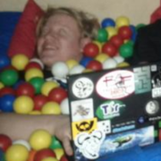
Adisbladis is a Nix consultant & nixpkgs committer, where he mostly enjoys working on lower level plumbing such as lib & stdenv, but also maintains Emacs & it's package ecosystem. Python developer in a previous life. He is the author of previous Python packaging efforts like poetry2nix.
James is the project lead for the Zuul project gating system, and a
founding member of the OpenDev collaboratory team. As a sysadmin and
hacker he gets to write elegant code and then try to make it work in the
real world. He has previously worked for the Free Software Foundation,
UC Berkeley, and the OpenStack Foundation. He currently provides Zuul
support and services through Acme Gating.
Jose is a Senior Software Engineer at Microsoft, where he focuses on Kubernetes and eBPF technologies. He joined the Inspektor Gadget project in its early stages and is now one of its maintainers. Jose has also been actively evangelizing the benefits of eBPF for observability and system inspection at conferences around the world.

Scott Bly is the Director of the API Security Practice at iSOA Group where he leads customer DevSecOps transformations through an API-first journey of cyber maturity and continual improvement.
Scott has served as a Cybersecurity Technical Account Manager (TAM) at Noname Security, and he led teams of TAMs at AWS where he ran the Enterprise Support Security Improvement Program, which has assisted thousands of customers to measure and improve their cloud security postures.
Scott’s...
Peter is a Founding Engineer at Tigris. Before joining the Tigris team, he worked at Percona, Dropbox, Zuora and Sun microsystems. Peter’s background and professional interest is running databases at scale, he had the opportunity to work on very large MySQL deployments alone with other data stores. Also very performance minded.
Bouskill is a senior researcher at Meta where she works in Meta’s Reliability Engineering organization. An anthropologist by training, Bouskill has worked around the world on a range of issues related to technology, risk & security, and public health. She is an adjunct researcher at the RAND Corporation and professor at the Pardee RAND Graduate School. Bouskill holds a Ph.D. in Anthropology and an M.P.H. in Epidemiology from Emory University.
I am a software engineer dedicated to supporting and accelerating scientific research. I am currently working at CliMA, the Climate Modelling Alliance, where I contribute to the development of a next-generation Earth-System Model.
Before joining CliMA, I obtained my PhD in theoretical and computational physics focusing on simulations of black holes. During my PhD, I was a NASA Future Investigator for Space Science and a Texas Advanced Center for Computing Frontera fellow. As part of...
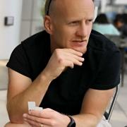
Tony came to Linux in 1994 and has never looked back. His entire professional career has been spent working with or on Linux.
Chris Breu

Jason Brooks is a software analyst with Red Hat, in the company's Open Source and Standards group. Previously, Jason spent 12 years as an analyst and editor with eWEEK Labs, testing and writing about enterprise IT, with a particular focus on Linux and open source software. Jason lives in San Francisco, California, with his wife and two sons.

Liam Broza is an engineer and multi exit founder in AI and XR. Notable projects include Ethereal Engine, BitScoop Labs, LifeScope and Laguna Labs. Companion Intelligence originated from project LifeScope in 2015 with the goal of building an open platform for anyone to personal digital memory database. In 2019, the LifeScope Time Machine was released to give anyone access to global travel into their history through AR and VR. In 2020 Laguna Labs founded Ethereal Engine with a core community...
Jonathan Bryce, who has spent his career building the cloud, is Executive Director of the Open Infrastructure Foundation. Previously he was a founder of The Rackspace Cloud. He started his career working as a web developer for Rackspace, and during his tenure, he and co-worker Todd Morey had a vision to build a sophisticated web hosting environment where users and businesses alike could turn to design, develop and deploy their ideal web site – all without being responsible for procuring the...
As a storyteller turned editor turned technical writer turned community manager for the Rocky Linux project, Krista knows a thing or two about reinvention. Her greatest joy is found in empowering people to do and become more than they knew they could. Krista and her family live on an overgrown hobby farm in central Texas with 9 cats and their own family dinosaur—a Sulcata tortoise named Suhaila.

Nolan Bushnell is a pioneering engineer and entrepreneur, best known as the founder of Atari, Inc. and the creator of Chuck E. Cheese's. In 1972, he co-founded Atari, revolutionizing the video game industry with the release of Pong, one of the first commercially successful arcade games. In 1977, Bushnell established Chuck E. Cheese’s Pizza Time Theatre, merging dining with arcade entertainment, which became a nationwide family destination. Over his career, he has founded more than 20...

Leigh is building Flox and is active with the Kubernetes and Flux projects.
He has a background in infrastructure software with a security niche.
He authored Flux 2's security model and kubeadm's mTLS implementation and is currently working on Kubernetes authorization with SIG Auth.
Leigh and his wife love to snowboard in Colorado and have 3 dogs.
__q_itok=pv5ygT-S.jpeg)
As a passionate advocate for open infrastructure, I’ve spent my career at the crossroads of innovation and practicality, delivering solutions that empower organizations to thrive in today’s rapidly evolving tech landscape. With a deep understanding of the power of open-source technologies, I’ve led teams that leverage AI and infrastructure to create scalable, sustainable, and future-proof systems. In my work, I focus on simplifying complexity, driving open-source adoption, and pushing the...
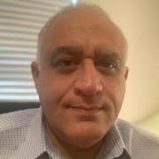
Bassam Chahine is a Principal Consultant at NetApp Instaclustr, which provides a managed platform around open source data technologies including Apache Cassandra, Apache Kafka and Apache Spark. Bassam architects open source solutions for data analytics and AI
Thomas Charlon is a research associate postdoc at Harvard Medical School. He completed his computer science PhD at the University of Geneva (2019) while being employed as a Bioinformatician at Quartz Bio (Merck Serono spin-off) to develop algorithms for clustering and sparse coding of genome-wide data in systemic autoimmune diseases. He then independently researched withheld content on social networks in European countries, and developed a Shiny web app for real-estate price estimation using...
Noah Chelliah was born and raised in Grand Forks ND. While attending the University of North Dakota in 2009 he founded Altispeed Technologies. Altispeed is an IT company dedicated to helping people leverage their technology to it’s full potential using open source principals.
Noah launched the Ask Noah Show in 2017, a weekly talk radio show. The goal was to create a path to serve the open source community by answering questions on system administration, IT business...
I am a high school student at Polytechnic School in Pasadena.
I've spent twenty years in the bay area doing tech startups including Sauce Labs, Buoyant and now Stateful. My focus has been primarily at the cross section of devTools, test automation, cloud native and web. In time away from the screen I love spending time with my family, playing in the woods, traveling, and soccer.
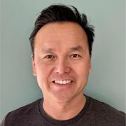
Gene is a software veteran and tech executive known for his expertise in mobile, social, cloud, Big Data, Search Marketing and eCommerce. He is most recently CTO of Flosports and has been head of engineering at P.volve, Beachbody, Sellbrite, Synctree and Oversee. Before that he was Director of Engineering at Chegg, Executive Director of AT&T Interactive and Director of Engineering at Yahoo Search Marketing/Overture where he built large-scale search marketing platforms. Gene is a LP...
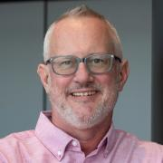
Mark Collier is a co-founder of the OpenStack project and the Chief Operating Officer at the Open Infrastructure Foundation. A committed advocate for open-source principles, Mark has played a key role in the development and global success of OpenStack, establishing it as a leading cloud computing platform and one of the most active open source projects to ever exist. Recently, he has also been involved in defining “open source AI,” contributing to the industry’s efforts to create clear...

Jon Connors, founder of restore-a-thon, brings together developers and AI enthusiasts to create solutions for real world social challenges. Through these high-energy hackathons, he helps technologists leverage artificial intelligence for action and policy innovation. Connors also co-founded Tax Free Gains, a startup tax advisory and serves as an AI advisor to early-stage startups, combining his passion for technology with sustainable business growth.

Ken Crandall runs Strategic Product Management for OpenStack and Kubernetes at Rackspace. His primary focus and passion at Rackspace is working with industry leading companies to help modernize IT infrastructure and practices. Ken has over 20 years of experience in product, IT managment, and in solution architecture. Ken has built his career around open source technologies and has contributed to many of the best practices that companies use today.
Since the age of 10 I’ve always been passionate about computers. I’ve been working with them ever since. In 2005 I got my degree in computer science. I used to work at a major Belgian university where I was developing the e-learning applications. In that position, I was the one who looked after the databases. From there on I grew to be their MySQL DBA. In 2017 I left the university and joined Pythian as a MySQL Database Consultant. Currently I am working at PlanetScale to support large...

Jenson Crawford is a software engineering leader and an active volunteer based in Los Angeles. He spent the first half of his career focused on optimizing software and is now focused on optimizing software and volunteer teams. Jenson is currently VP of Software Engineering for Eastman Kodak and is also serving in multiple volunteer roles.

Jon A. Cruz is a professional developer with over 20 years of experience, working extensively in multimedia, including programming and 3D art creation, and has developed for a wide variety of platforms. Work includes R&D for mobile and other devices, servers for large mail and messaging systems, enterprise security applications, and user interface design and development..
He had participated as a mentor in Google's Summer of Code since its first year with Inkscape and...
I'm a contributor to the OpenStack's Shared File Systems as a service. I been working in OpenStack upstream core features for Manila project, as well as maintaining CI/CD infrastructures and Storage Drivers. I am passionate about the open source community and its open culture since the first time he had contact with it. I have been serving as PTL for Manila for several releases.
Tim Dennis is the co-PI of the UCLA Open Source Program Office (OSPO), part of the UC OSPO Network, and the Director of the Data Science Center at UCLA Library. With expertise in data services in academia, he leads efforts to support data initiatives like the UCLA DataSquad and UCLA Dataverse. A regular user of R, Python, SQL, and command-line tools, Tim has extensive experience helping researchers and students apply these tools. As a member of The Carpentries, he co-leads workshops that...

Ex-Google, @DocuSign Lead Software Engineer with a passion for cloud, AI, and data.
Vinit is a seasoned software engineer with a demonstrated history of building on-premise and cloud-native distributed systems at scale. Currently, Vinit serves as a Lead Software Engineer at DocuSign, contributing to the Docusign's Storage team. With expertise encompassing cloud storage, distributed systems, and virtualization technologies such as Kubernetes, Docker, and the Linux Kernel, Vinit...
Rebecca Dittmar is a Senior Software Engineer with 7+ years at Nike. She's skilled in full-stack development and cloud technologies. Her work has directly impacted billions of annual Nike customer interactions. Beyond tech, she's an EMBA and enjoys an active lifestyle.
Simon is a tech enthusiast passionate about open-source automation, orchestration, and observability integrations. He aims to simplify technology adoption in open-source environments. Simon is deeply involved in the OpenStack Cinder community and has contributed to many collaborative designs. He is also an Ansible developer responsible for creating Pure Storage's leading storage automation experience.
Originally from England, Simon is a Sci-Fi enthusiast and Formula 1 fan. He...
Eelco started the Nix project when he was a PhD student at Utrecht University. He is a co-founder at Determinate Systems.
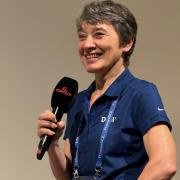
Henrietta (Hettie) Dombrovskaya is a database researcher and practitioner with over 40 years of academic and industrial experience. She holds a Ph.D. in Computer Science from the University of Saint Petersburg, Russia. At present she is
– Database Architect at DW Holdings in Chicago, IL
– Local Organizer of the Chicago PostgreSQL User Group
– Active community member, a frequent speaker at the PostgreSQL Conferences
– A researcher focused on developing efficient...
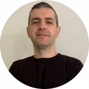
Database administrator with extensive experience designing, administration, implementation and supporting next-generation MySQL and MongoDB database solutions in the hybrid Cloud. Looking for Python development with intermediate experience and Terraform projects.
Katherine Druckman is an Open Source Evangelist at Intel where she enjoys sharing her passion for a variety of open source topics. She is a long-time open source advocate, developer, and podcaster, and is currently the host of Open at Intel and a co-host of the FLOSS Weekly and Reality 2.0 podcasts. Previously, Katherine spent over a decade as Director of Digital Experience at Linux Journal. A passionate Drupalist since she first downloaded a tarball in 2005, she has also been a Drupal...

A repeat founder, Ron dove into the world of developer tooling at Meta’s Facebook as the head of developer products, building the tools powering Meta’s 20,000-strong developer core. Realizing the limitations of existing tooling and recognizing the superpowers of Nix, Ron co-founded Flox to grow Nix and make it accessible to the wider engineering community.
Ron is on the board of the NixOS Foundation where he works on leading key efforts to strengthen and support the entire community....
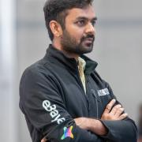
Ramprasad Ellupuru is a Site Reliability Engineering (SRE) Manager specializing in enhancing buyer experience and payments domains. At eBay, he leads initiatives to ensure critical buyer journeys maintain exceptional reliability and availability through robust engineering practices.
Mohamed Elsakhawy received his B.Sc. in Electrical Engineering from Alexandria University, Egypt and his M.E.Sc. in Electrical and Computer Engineering and Ph.D. in Computer Science from the University of Western Ontario, Canada. He is an industry expert in Cloud computing with expertise in large-scale multi-site Clouds. He served as the Operational Lead of Compute Canada’s Cloud National Team between 2017 and 2021. Between 2022 and 2023, Dr. Elsakhawy joined the Cirrus Lab at the University...
I've been working the ingredients leading to this moment for years, and so it is very exciting to finally see a first end-to-end demonstration of all the pieces working together! Nix Steering Committee member since 2024 Nix Team member since 2023 Software Engineer at Obsidian Systems since 2017, Nix user since 2014.
Peter has been building sustainable open-source projects and businesses for the last 12 years. He currently serves as the Co-Founder and CEO of FerretDB, the truly Open Source MongoDB Alternative, which helps users to use MongoDB drivers seamlessly with PostgreSQL as the database backend. Peter believes that open source is as sustainable in terms of product and revenue growth as proprietary solutions, and more and more entrepreneurs will work on open source projects.
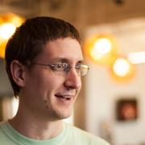
Greg Farnum is a long-standing member of the core Ceph development team and founding Inktank engineer. He has served in many roles as Ceph grows and is currently a member of the Ceph Steering Committee and manager of IBM's CephFS group. Greg is passionate about solving problems in distributed computing and expanding the Ceph community.
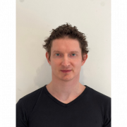
Andrew has more than 10 years of experience building database tools with a particular focus on databases in cloud native and SaaS environments. He currently works at Xata helping to build the next generation Postgres data platform. At Xata Andrew has a particular focus on building tools to help users achieve zero-downtime database migrations.
I am Jay Faulkner, an Open Source Developer and Advocate. I believe that through working with others around the world to solve problems we can make the world better. Open source is a great way to do that.
I have a long and varied contribution history in and around open source, including:
- Over a decade contributing to OpenStack, including two terms on the Technical Committee
- Over a decade as a core reviewer, and three-time PTL, on OpenStack Ironic
- Gentoo...
Infrastructure and cloud services developer. I'm deeply passionate about open source. Currently contributing to the Kanister project at Kasten by Veeam, we're reshaping data management for Kubernetes.
Rob Fletcher is the Co-Founder and Chief Operating Officer of DevZero, a Seattle-based startup specializing in cloud-based development platforms that enable developers to write and test code in production-like environments.
Before founding DevZero in 2021, Rob held significant roles in security engineering at major tech companies. He served as Head of Product Security at Uber, leading a team of over 45 security engineers, engineering managers, and product managers. Following his...

Alastair is an enthusiastic techie with a penchant for doing things the hard way and diving into the guts of a problem. As an engineer at Canonical he works on the open source cloud orchestration engine Juju, written in the Go programming language. He has a passion for open source software and its positive social impact on the world. When not immersed in the depths of a terminal, tinkering with his home server, Alastair can be found exploring the outdoors, running or playing the piano up in...
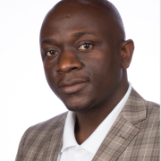
Dr. Armstrong is a researcher at the intersection of software ecosystem sustainability, affective computing, the trustworthiness of safety-critical systems, and software engineering for machine learning applications, including foundational models, AIWare, and Agentware. He mines massive datasets, including software repositories, and applies socio-technical data science techniques to uncover patterns and empirically make informed decisions.

Mikaël is currently a senior software engineer at Ticketmaster.
He enjoys spending time with family, taming complexity, and three-element enumerations.
Before working as a software engineer, he was a musician and a researcher.
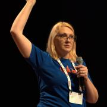
Adrianna Frick has worked on technical skills validation exams and credentials for companies including Canonical and knows what separates good certs from bad. She began her journey in open source in the late 1990s at Walnut Creek CDROM working with teams from Slackware Linux and FreeBSD among others. As someone who has experienced the employment volatility of tech bubbles, and as someone who left and returned to the industry after career changes, educational gaps, and family caregiving, she...
__q_itok=Gb3uGCHD.jpg)
Currently I'm a platform engineer at Replit. I've been using Nix since 2021. In my free time, enjoy working on tooling to make NixOS easier to use.
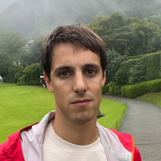
I work at Arm as a Software Engineer in Austin, TX. I have started working with Nix while searching for the holy grail of reproducible environments.

Kat Gaines leads developer relations at PagerDuty. She enjoys talking and thinking about incident response, customer support, and automating the creation of a delightful end-user and employee experience. She previously ran Global Customer Support at PagerDuty, and as a result it’s hard to get her to stop talking about the potential career paths for tech support professionals. In her spare time, Kat is a mediocre plant parent and a slightly less mediocre pet parent to two rabbits, Lupin and...

Dr. Diego Galeano is a Machine Learning Researcher at the Faculty of Engineering, Universidad Nacional de Asunción (FIUNA) in Paraguay. Dr. Galeano’s research focuses on developing machine-learning models for applications in drug discovery and medicine. He has contributed to studies on predicting drug side effects and developing ML frameworks for pharmacological countermeasures on the impact of space radiation on human health.
Long-time Nix user, maintainer of the NixOS integration test driver, C++ book author, Founder of the Nixcademy

Justin is a engineer building communities and solutions.

Richard Gaskin is the owner of Fourth World Systems, a software design and development consultancy in Los Angeles. Since founding the company in 1994, he's developed dozens of commercial and open source applications used by a wide range of organizations, including FedEx, AOL, the US Library of Congress, and thousands of hospitals and universities around the world.
Although he started his career with Mac OS, Richard has since delivered applications for Irix, every version of...

Carl George leads the Extra Packages for Enterprise Linux (EPEL) team in the Community Linux Engineering group at Red Hat. He participates in many open source projects, often related to his packaging activities in Fedora, EPEL, and CentOS. He is a member of the EPEL Steering Committee, the Fedora Packaging Committee, and various Fedora Special Interest Groups.

Manish Gill works at ClickHouse Inc, where he is managing the AutoScaling team for ClickHouse Cloud. He is based out of Berlin and is deeply interested in Databases and Cloud challenges and runs https://berlinsystems.xyz/ on the side.
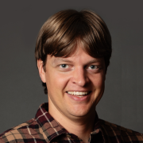
Denver is a software right-to-repair and standards activist who is currently Director of Compliance at Software Freedom Conservancy, where he enforces software right-to-repair licenses such as the GPL, and is also a director of the worker co-operative that runs JMP.chat, a FOSS phone number (texting/calling) service. Denver writes free software in his spare time: his patches have been accepted into Wine, Linux, and wdiff. Denver received his BMath in Computer Science from the University of...
Andy Giron is a Senior Security Researcher at Datadog, he focuses on threat cloud-landscape. Previously he was a Threat Researcher for Arista Networks specializing in network malware analysis. An Incident Response Engineer and led the Cyber Threat Intelligence initiatives at Hulu. Prior to switching to the DFIR side of the house, Andy was a Security Engineer at Currency Exchange International. He enjoys all aspects of security and is an all around breaker of things.
Tim has over 10 years of experience in quality assurance across environmental and industrial domains, including critical infrastructure testing. This background drives his passion for software systems and technologies like Nix and Linux. Currently pursuing an MSCS at Georgia Tech, Tim brings an out-of-the-box perspective and a cross-disciplinary approach to problem-solving. Passionate about open source, he also serves on a Search and Rescue team and enjoys all forms of mountain recreation....
__q_itok=mSwfTCV3.jpeg)
Previously, Head of Cloud Platform Engineering at Rubrik, scaling $5M to $600M ARR. Cofounder/CEO of Neptune.io (YC-backed observability startup). Early Engineer at AWS S3, Founding engineer at DynamoDB.

Federico is a seasoned leader with a global perspective and a deep commitment to advancing technology in Latin America and their home countries. I possess extensive experience in both the public and private sectors, as well as at national and international levels.
He is passionate and results-oriented innovator with a proven track record of leveraging technology for development, social inclusion, and technological sovereignty and independence.
A Mexican professional educated in...
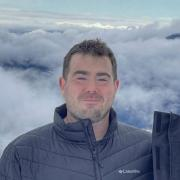
Software, web, and game developer with a passion for Linux and open source.
I’started using Linux in 1996, and PostgreSQL in 1998. Love to travel, listen to music, and enjoy life with friends. Joined PostgreSQL community around 1999. Currently maintaining PostgreSQL official RPM repository at https://yum.postgresql.org and https://zypp.postgresql.org . Contributed to many PostgreSQL related projects. Already a Fedora and EPEL contributor as well.
Working at EDB as Postgres...

Magnus Hagander is a member of the PostgreSQL Core Team and a developer and code committer in the PostgreSQL Global Development Group.
Magnus is one of the original developers of the Windows port of PostgreSQL. These days, he mostly works on other parts of the PostgreSQL backend, recently with a focus on security features, monitoring and backup/replication interfaces and tools.
He is also one of the core members of the postgresql.org infrastructure team, maintaining the servers...

Nathan Haines is an author, instructor, and computer consultant who fell in love with Ubuntu in 2005, and helped found the Ubuntu California Local Community Team to share that excitement with others. As the leader of the California team and a member of the Ubuntu Local Community Council, he works to help others support and share Ubuntu worldwide.
His mission to educate and excite people about Free Software and Ubuntu continues with his book, Beginning Ubuntu for Windows and Mac Users...
Jon "maddog" Hall is the Board Chair Emeritus of the Linux Professional Institute (lpi.org).
During his career in commercial computing which started in 1969, Mr. Hall has been a programmer, systems designer, systems administrator, product manager, technical marketing manager, author and educator.
He has worked for such companies as Western Electric Corporation, Aetna Life and Casualty, Bell Laboratories, Digital Equipment Corporation, VA Linux Systems, SGI and Linaro...
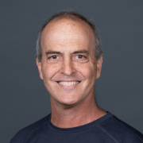
Nuri Halperin is a software architect, speaker, and author. He helps companies design scalable systems, websites, and business applications. He’s been turning projects into success stories for a variety of clients for over 2 decades.
He is the author of several Pluralsight.com courses. He's also a Microsoft MVP alum, a MongoDB Champions member, and recipient of MongoDB's William Zola Award for Community Excellence. He enjoys tinkering with Arduinos, 3D printing, and robotics...
11th grader at RUHS
Colorguard Commander and Cadet Gunnery Sergeant in MCJROTC
Studying Cybersecurity
Senior Developer Advocate at Datadog, focused on DevOps, SRE, and AI. Committed to empowering developers with modern engineering techniques for scalable, reliable, and explainable systems.
Sam Hanna is a medical technician at Abbott Labs for the past 7 years. He has been a Linux user for over 15 years. He is self-taught individual who has been inspired many people in the linux community and loves working with many Linux distributions, server applications, and tools. He is an advocate of opensource software and self-hosting. His goal is to reach out and spread his knowledge to others and hope to inspire others just as the opensource community has done for him...
Addison Hart is a recent graduate of the Colorado School of Mines and a software engineer at Verizon on the infrastructure team in Aurora. In addition to his full time work on automation, he has 4 years of experience reverse engineering APIs and homebrewing embedded devices. His most well known work in that space is the public Mario Maker 2 API used by that community. He is an active contributor to local Linux User Groups in the greater Denver area and has given 7 talks on topics ranging...
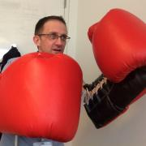
Currenty I'm an engineer at Meta where I've spent the last 6 years developing and applying software for C++ application observability. During my career I've has been fortunate enough to be involved in developing some interesting technologies including Sun Microsystem's Solaris Dynamic Tracing system (DTrace) and technologies within Oracle's RDBMS Database.

By day, I'm the CFO and COO of PGX, Inc., a Postgres-only consultancy in Alameda, California. I'm also the President of the U.S. PostgreSQL Association (PgUS), a nonprofit dedicated to the advancement of PostgreSQL through education and advocacy. I'm an organizer of the San Francisco Bay Area PostgreSQL Users Group. At conferences in the US and Europe, you'll often find me at the registration desk. I'm also the creator of the original PostgreSQL Community Code of...
From film to engineering, Annie’s career has seen many iterations. She is a keen observer of what works and what doesn’t, striving always to make the right thing to do the easy thing to do. Annie and her husband, Michael, are raising their three teenagers in Boulder, CO. She’s currently working on a project to make doing the right thing with your career the easy thing to do. Find out more at people-work.io.

Christian is a well rounded technologist with experience in infrastructure engineering, systems administration, enterprise architecture, tech support, advocacy, and product management. Passionate about OpenSource and containerizing the world one application at a time. He is currently a maintainer of the OpenGitOps project, a member of the Argo Project Marketing SIG, and co-host of GitOps Guide to the Galaxy. He focuses on GitOps practices, DevOps, Kubernetes, and Containers.
Software Engineer @ Meta working on scheduling with sched_ext. Experience deploying novel userspace schedulers to production and building the features needed to outperform existing kernel schedulers, debugging application performance along the way.
Previous experience working on debuggers and memory profiling, with a focus on writing high performance memory efficient C++.

Mark Hinkle is an emerging technology executive and CEO of Peripety Labs, a digital consultancy that helps users be more successful with AI in their enterprise. With over 25 years of experience, he has expertise in the use of enterprise software, including artificial intelligence. Hinkle has held executive positions at Cloud.com, The Linux Foundation, and Citrix, and was the CEO and cofounder of TriggerMesh, a cloud integration company that was venture-backed by Cisco, Index, and Crane...

Adam Holt is a computer scientist who was OLPC's Community/Support Manager, has served schools in Haiti, traveled the world building an understanding of technology around developing world schools, and catalyzes Internet-in-a-Box communities worldwide. He hopes you too will seize the day, unleashing grassroots learning libraries in all countries.
__q_itok=gq5AFd-Y.png)
Bryan's been interested in computing for as long as he can remember. Even studying electronic engineering, just to understand how a computer could add 2 numbers together on a transistor level.
Recently, he's been interested in the smaller details of operating systems. How they work, why they look they way they do, and why LISP machines never took off.
Please don't hesitate to approach him about anything tech, or music, related. But, be warned, he has a tendency...

Shaun is a Production Engineer at Meta, where they have been i shaping integrations with the public cloud infrastructure landscape. They specialize in creating intuitive platforms for container creation and Kubernetes management, with a particular focus on building infrastructure-level software to support both generic compute and large-scale Artificial Intelligence HPC training clusters. Shaun's work is dedicated to enhancing accessibility and efficiency for developers, driving innovation,...
Software engineer building observability platform at eBay
James Huang is a Product Manager for Red Hat Enterprise Linux, focusing specifically on the High Performance Computing and AI capabilities and offerings for RHEL. Prior to joining Red Hat, he has served in a variety of technical roles from engineering and product development to product management in many different industry verticals including digital consumer banking, computer networking, industrial automation, and medical device development.
Early on, Sara shifted from economics to marketing, inspired by "The Invisible Hand," and focused on a human-centered approach. She has diverse marketing experience, from Fortune 200 companies to startups. Sara currently works at Pulumi, an Infrastructure as Code startup. She is passionate about the DevOps culture and mindset, which puts people first, and the value of soft skills. In her free time, she provides on-demand high-level strategy consulting to undisclosed executives in...
__q_itok=0mQ28Niz.jpg)
I'm a tech nerd, who's obsessed with any and everything related to robotics, renewables and infrastructure. I've been into robotics for as long as I can remember. When I was younger, I loved to take apart anything electronic, study it and reassemble it and now as an adult, I'm a STEM educator and building Arduino-based robots in my free time. I'm very happy to be alive in this period in time because I believe that we (humanity) are in the beginning of a tech/robotics...
__q_itok=ITarcSX-.jpeg)
Solomon Hykes is the co-founder and CEO of Dagger.io, the first programmable CI/CD engine. Before that, he was the co-founder of Docker, where he served for 10 years as CEO then CTO, and a founding member of the CNCF Technical Oversight Committee. Solomon grew up in France, and now lives in San Francisco.
__q_itok=HhVhr1j0.png)
I'm Xe iaso, a technical educator, twitch streamer, vtuber, and philosopher that focuses on ways to help make technology easier to understand and do cursed things in the process. I live in Ottawa with my husband and I do developer relations professionally. I am an avid writer for my blog xeiaso.net, where I have over 500 articles. I regularly experiment with new technologies and find ways to mash them up with old technologies for my own amusement.
Jonah Ibarra is currently an eighth grader at Los Nietos STEAM Academy. He enjoys sports and will be running the LA Marathon this year. He has a passion for technology and engineering. He is a member of the Cybersecurity Club at his school and competes in CyberPatriot specializing in Linux security.

Matt Ingenthron is a VP of Software Engineering at Couchbase a software development background and experience with high-scale, high performance system design. He has deep expertise in building, scaling, and operating global-scale web deployments across many platforms. He has been a contributor to the memcached project and a core developer on Couchbase developing much of the early clustering platform interfaces. Matt's teams are currently building all of the SDKs/Connectors for Couchbase...

Ryan Jarvinen is a Developer Advocate at Red Hat, focusing on improving developer experience in the cloud native community. He lives in Sacramento, California and is passionate about open source, open standards, open government, and digital rights.
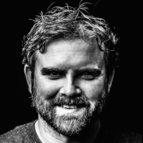
Sam Johnston is an Australian technology executive and serial entrepreneur with over 20 years of experience founding and advising startups, as well as holding leadership roles at companies like Google, Equinix, Citrix, and DXC Technology. His work spans emerging technologies, including artificial intelligence, drones, robotics, 3D printing, computer vision, augmented reality, blockchain, and quantum computing.
As the Convenor of the Open Source Alliance, an AI Convergence challenge of...
I'm a software developer from New Zealand, with over a decade of experience. I have a particular affection for functional programming, and have been an avid Nix user since 2017. In my spare time I enjoy photography, baking, video games and music.
Hobbyist programmer who became an embedded and mobile security engineer for Viasat, and later a member of SNUG. Works on mobile devices for a day job, and may have read Ken Thompson's Reflections on Trusting Trust one too many times.
Sinan Kefeli is an AI scientist with a focus on natural language processing (NLP), machine learning, and computer vision. At Verizon, he develops models to analyze customer call transcripts, improve customer interactions, and answer complex queries using large language models (LLMs). His work includes fine-tuning open source models like Mistral and Flan-T5, building graph databases, and creating tools for real-time information retrieval.
Prior to Verizon, Sinan earned his PhD in...
Mike Kelly is the CTO, Developer and Co-Founder of a SaaS company called MemberVault. He is not only a big Linux fan for personal uses, but uses Linux exclusively to develop and host the platform. Mike is based in Olympia, WA where him and his wife run MemberVault, while raising 3 kids and a golden doodle.

Avni Khatri is Sr. Director of Education in GitHub's Developer Relations organization, helping learners access the tools and resources they need to successfully build software products. Avni is passionate about working with learners and educators of all kind to make coding available to the next generation of developers around the globe. She also volunteers with Internet-in-a-Box.
Nina Kin is the Technical Lead for LA Metro’s Digital Services Team. With over 15 years in local government and a background in software engineering, she is determined to make government work better for the public. Outside of Metro, Nina serves as a Board Member for MobilityData and is on the organizing team for several government/tech/data events, such as Data + Donuts LA, MaptimeLA, the LA Arts Datathon, and the International Humanitarian Mapathon.
When she’s not in front of a...
Divya K Konoor is a Senior Technical Staff Member (Senior Product Development Architect) in IBM Z Systems and leads Confidential Computing offerings like IBM Hyper Protect Crypto Services, Hyper Protect Virtual Service, Crypto Appliance and other Hyper Protect On-Prem and IBM Cloud Offerings. She has 21 years of experience in the IT industry with around 18 years in Cloud Technologies, Virtualization, Systems Management, Security and Confidential Computing. She is a passionate speaker and...
Julia has seen things, and built things! Sounds ominous right? She started in Networking early in her career, and drifted through building data centers, hardcore systems engineering, and eventually the automation of the data center infrastructure! She is a Senior Principal Software Engineer at Red Hat, and serves on the Board of Directors of the OpenInfra Foundation. When she is not in meetings, she can sometimes be found working on the Ironic Project, which helps facilitate Bare Metal as a...
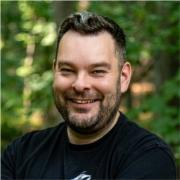
Podcaster. Tailscalar. Linuxserver.io co-founder. Drone Racer. Photographer. Dog Lover.
UK raised but now living Raleigh, NC, USA, Alex is a container evangelist and tinkerer by nature.
He a host of the Self-Hosted podcast (https://selfhosted.show) and Head of Developer Relations at Tailscale. He is also the author of https://perfectmediaserver.com and is passionate about helping others get into...
Alexander is the CEO of Tempesta Technologies, Inc., and is the architect of Tempesta FW, a high performance open source Linux application delivery controller. Alexander is responsible for the design and performance of several products in the areas of network traffic processing and databases. He designed the core architecture of a Web application firewall, mentioned in the Gartner Magic Quadrant, and MariaDB system versioning.

Bradley M. Kuhn is the Policy Fellow and Hacker-in-Residence at Software Freedom Conservancy (SFC). Kuhn began volunteering in the software freedom movement in 1992 — as an early adopter of Linux and contributor to many FOSS projects including Perl. As Free Software Foundation (FSF)'s Executive Director from 2001-2005, Kuhn led FSF’s GPL enforcement and invented the Affero GPL. Kuhn was SFC’s primary volunteer from 2006–2010 and its first...
I am an engineer of the virtualization platform group of the core network development department in NTT DOCOMO. I am designing the operation of the EPC, 5G core, IMS, other core network function and radio network using NFV specification, and developing MANO for commercial mobile systems.
- I developed OSS in DOCOMO to support operation of 2G/3G/4G core and radio network function by 2010.
- I developed MANO in DOCOMO to virtualized EPC and IMS network by 2015.
- I was bridge...
With more than 10 years of recruiting experience in the open source space, Mary specializes in creating positive candidate journeys that generate community advocacy and repeat applicants. Currently recruiting for DBeaver, her approach combines automation, transparency, and clarity, empowering companies to provide exceptional candidate interactions despite small hiring teams or limited tools. Through her commitment to hiring best practices, Mary has demonstrated that an optimized candidate...
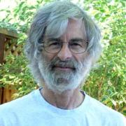
Leslie B. Lamport is an American computer scientist and mathematician. Lamport is best known for his seminal work in distributed systems, and as the initial developer of the document preparation system LaTeX and the author of its first manual. Lamport worked as a computer scientist at Massachusetts Computer Associates from 1970 to 1977, Stanford Research Institute (SRI International) from 1977 to 1985, and Digital Equipment Corporation and Compaq from 1985 to 2001. In 2001 he joined...
Emily is a Developer Advocate at RisingWave Labs, working in the stream processing space, and curious about all data-related technologies. At RisingWave Labs, she builds demos, creates product videos, and writes tutorials, guides, and blogs.
Tom is an artist who has been using and making various open source tools to help produce his artwork for almost 20 years. For instance, he created desktop publishing software called Laidout to produce his comic books, and is now exploring the many aspects of video game production. He is based in Portland, Oregon, USA.
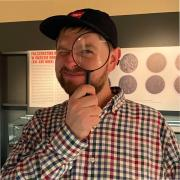
Maciej Lecki is a distinguished industry veteran, bringing over two decades of experience in network engineering. Maciejs unwavering passion lies in open-source computer networking, and he is are a driving force behind cutting-edge solutions. As an influential thought leader, Maciej actively contributes to open-source projects and mentors aspiring professionals.
Dr. Corey Leong is a professor at Valencia College. He teaches cloud computing courses, in addition to, overseeing cloud mentorships and cloud internships. Before entering higher education, he worked for 25 years in the IT industry with organizations such as Oracle, Google, and IBM. He lives in Orlando, Florida and enjoys reading, running, and attending Orlando Magic basketball games.
Mitchell Levy is a recent graduate of the University of Washington's Paul G. Allen School of Computer Science and Engineering. His interests center on tools and methodologies that help people write safer and more robust code.
Nick is an engineer at Flox, working to bring the power of Nix to the masses. Prior to that, he spent over a decade at Puppet, rewiring his brain to see the whole world as a desired state problem.
__q_itok=MHZc-epJ.jpg)
Stephanie Lieggi is executive director for the Center for Research in Open Source Software (CROSS) and the UC Santa Cruz Open Source Program Office (OSPO). In her current role, she supports the work of academic-based open source projects and enables a sustainable contributor base through the establishment of hands-on mentorship programs. Stephanie promotes the use of open source in academic settings as well as increasing diversity and inclusion in open source ecosystems.

Andrew Lim is a seventh grader at Los Nietos STEAM Academy. He’s an active member of the MESA (Mathematics, Engineering, Science Achievement) program, Cybersecurity Club, and competes in CyberPatriot specializing in Linux security. Andrew is a rated US Chess Federation player, who has won many tournaments. He is passionate about cybersecurity and aspires to build a career in the field.
Joyce Lin is the head of developer relations at Viam, a robotics platform that connects software with smart machines in the physical world. Based in San Francisco, she is also a Tiktok influencer, dog mom, cat mom, and writer.
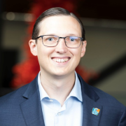
Georg’s mission is to make open source more professional by using community metrics and analytics. Georg cofounded the CHAOSS Project to advance analytics and metrics for open source project health. Georg is an active contributor to several projects and often presents on open source topics. Georg has an MBA and a Ph.D. in Information Technology. As the Open Source Strategist and Director of Sales at Bitergia, Georg helps organizations and communities adopt metrics and make open source more...
I’m an all around geek with a passion for systems administration and the DevOps culture who is always searching for a better way to accomplish a task or to solve a problem. I’m also a pragmatic systems architect who regularly looks for non-traditional solutions to problems. I believe in using the best operating system for the problem at hand, be it Linux, macOS, Windows, or something else. I’ve been working in IT for over 20 years and have been using all three of those the entire time.
...
Cynthia is program manager at GitHub, leading social sector partnership programs with a focus on open source projects contributing to SDGs and digital public goods. As well as capacity building to GitHub tools for the social sector and nonprofit organizations.
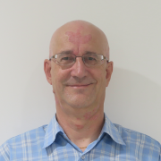
Jean-Charles "JC" Lopez, an Advanced Technology Specialist at IBM, has been in the field of storage for over 30 years. He has dealt with the challenges of each era over different operating systems and in different environments—from OpenStack to OpenShift and from mainframe to open systems. He likes to share his passion for storage while promoting open-source solutions. Since 2019 he's been working full time with Red Hat OpenShift customers and help them build data services platforms around...
__q_itok=w_8AF7bz.jpg)
Lori has a passion and enthusiasm for working with the developer and open source community. She is the Data on Kubernetes SIG Co-Chair, a CNCF & CDF Ambassador, former Chair of CNCF Marketing Committee and the CDF Outreach Marketing Committee, program chair of cdCon 2023, and is active in the OpenSSF DevRel committee. She co-hosts the CD Pipeline on behalf of the CDF with TechstrongTV. She is committed to helping open source and other tech communities grow and adapt in our ever changing...

Dr. Emily Lovell is an OSPO Incubator Fellow at UC Santa Cruz. Her research and teaching use novel domains to invite broader participation in computing, with her postdoctoral work focusing on newcomers to open source. Emily previously served on faculty at Berea College, where she developed and taught courses on open source contribution and computational craft. She has a S.M. in Media Arts & Sciences from the MIT Media Lab and a Ph.D. in Computer Science from UC Santa Cruz.

Federico Lucifredi is the Product Management Director for Ceph Storage at Red Hat and a co-author of O'Reilly's "Peccary Book" on AWS System Administration. Previously, he was the Ubuntu Server product manager at Canonical, where he oversaw a broad portfolio and the rise of Ubuntu Server to the rank of most popular OS on Amazon AWS. A software engineer-turned-manager at the Novell corporation, he was part of the SUSE Linux team, overseeing the update lifecycle and...
Justin is a technical support engineer at Akuity and Argo CD maintainer. He is passionate about open source and cloud native technologies that leverage productivity. In his spare time you will find him hiking with his family or scuba diving the California Channel Islands.
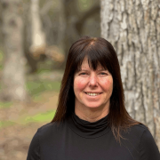
Amy Marrich is a Principal Technical Marketing Manager at Red Hat. She currently serves as the Chair of the CentOS Project, Vice Chair of the Open Infrastructure Foundation (OpenInfra) Board of Directors, and is on the Community Health Analytics in Open Source Software (CHAOSS) projects governing board. In addition, she serves on the Red Hat OpenStack technical committee, is Chair of the OpenInfra Diversity and Inclusion Working Group, contributes to several OpenStack projects, and...

I've been technically leading, mentoring, and managing a team, helping companies and people with current and future needs, starting from SW engineering to everything database, currently focused around MySQL. I work for Pythian doing what I love, in a challenging environment. I'm passionate about leadership, mentoring, and data.
I started my career at VitalSource Technologies a decade ago, as a MySQL DBA. I've spoken at numerous database conferences across the US and in Europe, sharing insights on scalable database architectures and performance optimization.
In my current role, I lead the systems engineering team while championing initiatives that drive both technical and social impact. I established VitalSource's Cloud FinOps practice to optimize cloud resources and founded the company's...

At NGINX, Dave works with DevOps, developers and architects to realize the advantages of modern microservice architectures and orchestration in distributed systems, especially for today's fast-moving cycles.
Dave has been a champion for open systems and open source from the early days of Linux to today's world of clouds and containers. He speaks on topics such as the real-world issues associated with emerging software architectures and practices. He covers topics such as...
Jimmy leads the collaboration with OpenInfra Members, including strategy development, goal alignment and new member recruitment. Outside of advocating for current open source trends and distributing his calendar link (which you can find here: https://calendly.com/jimmy-mcarthur), he enjoys cooking, traveling, and having the best award winning chili in Texas.

Shaun is the CentOS Community Architect at Red Hat. He's an occasional developer and tech writer. He's worked on documentation and documentation systems in a number of open source communities, most notably as part of GNOME for the last two decades.
Lee McWhorter, Owner & Chief Geek at McWhorter Technologies, has been involved in IT since its early days and has over 30 years of experience. He is a highly sought after professional who first learned about identifying weaknesses in computer networks, systems, and software when Internet access was achieved using a modem. Lee holds an MBA and more than 20 industry certifications in such areas as System Admin, Networking, Programming, Linux, IoT, and Cybersecurity. His roles have ranged...
Ana Margarita Medina is a Staff Developer Advocate at Upbound, she speaks on all things SRE, DevOps, Platform Engineering and Reliability. She is a self-taught engineer with over 14 years of experience, focusing on cloud infrastructure and reliability. She has been part of the Kubernetes Release Team since v1.25, serves on the Kubernetes Code of Conduct Committee, and is on the GC for CNCF's Keptn project, When time permits, she leads efforts to dispel the stigma surrounding mental health...
Gabriela Medvetska is a Software Engineer at eBay. As a member of the Site Reliability Engineering team, she worked on a variety of projects ranging from developing UIs for internal observability tooling to implementing machine learning algorithms to improve site resiliency during external vendor outages. She is a banana slug from Ukraine and has a Bachelor's Degree in Computer Science from the University of California, Santa Cruz. Being a typical Gemini, she has 50 billion hobbies, but...

Jeremy is a seasoned DevRel & DevEx leader, an international speaker, and is currently the Director of DevRel at OneStream Software, previously at CircleCI, Solace, Auth0, and XDA. With almost 30 years in Tech, covering just about every functional area, including support, system and database administration, application and web development, project management, program management, and systems analysis, Jeremy is active in the DevRel and DevOps communities, a co-creator of DevOpsPartyGames....
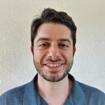
Paul is an SRE and HPC automation engineer by day and wears his physicist hat by night to solve physics and engineering problems on computing systems using FOSS software. Motivated by a passion to bridge gaps between science, engineering, and computing, Paul stands on the proverbial shoulders of giants to demonstrate that difficult, time-consuming calculations can be codified to scale out and return desired results in a timely manner, and enjoys sharing that learning process with others.


Tyler Menezes is the Executive Director at CodeDay, where he works to increase diverse Computer Science enrollment across North America by inspiring underrepresented students to give coding a try.
Born in Canada but raised in the Pacific Northwest, he briefly attended the University of Washington before dropping out to start a Y Combinator and venture-backed social video startup in 2011. This, combined with stints working in machine learning at Microsoft Research and as a programmer...

Nick Meyer studied physics and computer science at Caltech, and is currently a Staff Software Engineer on the Platform Engineering team at Academia.edu. A major focus during his tenure at Academia.edu has been streamlining and modernizing the data layer, in particular projects around operations of Academia.edu's PostgreSQL clusters, including upgrades, partitioning, and backup tooling.
Worked in the distributed computing field for over 25 years, starting with designing data serialization algorithms for MPI (PhD subject), time synchronizing multimedia network streams collected using commercial-off-the-shelf hardware, developing a job scheduler, architecting data-driven research evaluation platforms, and conceiving and leading the team building an agnostic benchmarking model to allow researchers to bring their algorithms to specialized datasets.
Co-chair of the...
Noel Miller is a Technical Account Manager at Red Hat, and the Core Contributor at Universal Blue.
He has been working in IT for a little over 10 years, with most of his career being focused on Small and Medium Size businesses. For his day job, he works at Red Hat as a Technical Account Manager with a focus on Ansible.
He is a Core Contributor at Universal Blue. Universal Blue builds a diverse set of continuously delivered operating system images using Fedora Atomic Desktop...
DJ is the Founder and CEO of ZConverter, a pioneering cloud migration software company with 20 years of experience. Prior to establishing ZConverter, DJ spent a decade at IBM, where he served as a Principal in Virtualization and High-Performance Cluster Technology. Currently, DJ is committed to helping organizations streamline and expedite their migration from VMware to OpenStack. Outside of his professional life, DJ is an avid tech enthusiast who enjoys mentoring young entrepreneurs and...
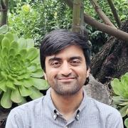
Jash Mistry is a Senior Software Engineer at eBay. As a member of the Site Reliability Engineering team, he played a crucial role in the evolution of monitoring—expanding on absolute error counts and average latencies to develop a highly reliable SLO-driven observability platform. He has a Master's Degree in Computer Engineering from Georgia Institute of Technology. Movie theatres are his second home, but he does not mind seeing one from the couch as long as it's on Mubi or the...
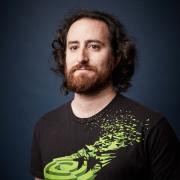
Kevin Mittman is a GNU/Linux enthusiast with a passion for automation. He is a system software engineer at NVIDIA, with a focus on the installer packaging and release process for CUDA, the NVIDIA driver, and other CUDA-X products. Before joining NVIDIA, Kevin began his career in the open source community, maintaining Debian packages for Maemo and later an ArchLinux-based kiosk Linux LiveUSB distro.

Erik Alessandro Mondrian (he/they) is a writer, visual artist, vocalist, musician, filmmaker, scholar, coder, and longtime explorer of virtual worlds. He holds a BA in French, with a minor in Spanish, from the University of Hawaiʻi at Mānoa; an MA in Communication, with a specialization in Mass Communication and Media Studies, from San Diego State University; and an Interschool MFA in VoiceArts & Creative Writing, with a concentration in Integrated Media, from the California Institute of...
I got my start working in the tech world back in the dot-com days, at an Idealab! startup. I have also spent time in Web2 at MySpace, and more recently in Web3 at my own startup. I have worked extensively with systems and networks, including as a Principal Architect in the CDN world. I present on various topics at a wide variety of venues, with recordings and slide decks posted online. I am currently the Principal Architect at Inertia Labs, a consulting firm dedicated to issues around...
Alex is a high school junior interested in the social aspect and uses of information technology. He’s been gaining experience in digital community leadership for over 2 and a half years in the online gaming space. While learning computer science in high school, he leads his own gaming community, developing new techniques and gaining experience-based information on project management, social organization and the theory behind the success and failure of communities, especially in the online...

Eisly Morales is a seventh grader at Los Nietos STEAM Academy. She plays soccer, paints, reads, and helps take care of her neighbors animals during her free time. Eisly likes cybersecurity because she is able to help protect others. She is a member of the Cybersecurity Club at her school and competes in CyberPatriot.
I have spent over ten years helping launch Bloomberg's OpenStack private cloud. As part of this effort I was chairman and co-organizer of the Openstack Operators Meetups team and we successfully organized multiple meetups around the world including in New York, London, Tokyo, Berlin and Mexico City
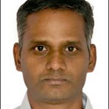
Skilled software architect with 20+ years of experience in crafting enterprise Edge and Multi-Cloud architectures for
High Performance Computing. Possess hands-on implementation experience in Equinix Data Center Digital Services and
hyper-converged multi-cloud infrastructure private connectivity solutions for Azure, GCP, AWS, and Oracle Cloud.
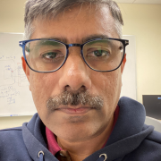

Autumn is a product manager at Microsoft Azure specializing in Linux security. In her previous role at AWS as a software engineer, she focused on the development and release of Amazon Corretto (Java) while actively engaging in the OpenJDK community; before that, she worked as an AWS NoSQL Solutions Architect and created educational content in Python and Java.
Autumn co-hosts the exciting new "Fork Around and Find Out" podcast, sharing stories on tech lessons learned, with her...
Michal is a Senior Technical Lead at StackHPC. He has worked in OpenStack across different companies for 10+ years including Enterprise, Telco and HPC markets. He currently serves as a Project Team Lead for OpenStack Kolla and core team member for OpenStack Magnum.
Kendall first started working on OpenStack in 2015, and has since been bridging open source communities together (like OpenStack and Kubernetes) through her passion to collaborate.
When she is not evangelizing about the awesomeness of open source, creating a welcoming community, or generally making upstream development in open source a friendlier place, she can be found reading Harry Potter, watching Doctor Who, or out on a photo taking adventure.
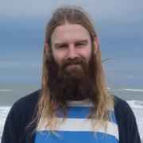
Rickard Nilsson has worked as a freelancing Nix/NixOS expert for over a decade. Five years ago he founded nixbuild.net, which is an advanced scalable build cluster for Nix offered both as a cloud service and for enterprise deployment.

Jason is a young professional in the HPC industry passionate about developing the next generation of lean, mean, open source supercomputing machines. By day, he works at Canonical as their resident HPC engineer making Ubuntu better for supercomputing, and by night he leads the Ubuntu HPC community team as one of its “Not so Ancient Elders.” He is focused on addressing current and future challenges facing the HPC industry such as the convergence of cloud and HPC systems, the impending end of...
Jussi Nummelin is a tech veteran with 20 or so years in IT and software. Currently a Senior Principal Engineer at Mirantis, he leads the k0s Kubernetes distro development efforts. Jussi embraced containers early, deploying Docker 0.6 to production. Since 2017, he's been working in and around Kubernetes. Being hardheaded he still takes joy from building tools and solutions to bring cloud-native to masses. Beyond tech, he finds peace as an avid fisherman.
Currently the Founder of EverythingDevOps, Divine Odazie is a Developer Relations Professional and Technical Writer with over 5+ years of experience in Technology and a track record in Backend Engineering, DevOps, Cloud Native and Developer Relations on a global scale.
He has given talks/workshops at developer conferences like Open Source Summit Europe, KubeCon North America, Cloud Native Rejekts, and Ansible Contributor Summit.
He also supports the cloud native community in...
Distinguished Researcher, NTT Network Innovation Center. He is a PTL of Tacker from Victoria cyclea, and a maintainer of tosca-parser and heat-translator. He joined NTT in 2003. His research interests include distributed systems, network virtualization, and network architectures.

Heather Osborn, Engineering Manager, Developer Enablement, Zapier
Heather Osborn has been working in technology as a system and operations engineer and manager for the last 25 years, moving from physical to cloud infrastructure.
Heather is an avid long distance runner who has lots of time to think about these things while pounding the pavement.
Steve Oualline is the author of "Practical C Programming", "How Not to Program in C++" and many other programming books. He has been a professional programmer for over 45 years and currently resides in San Diego.
Goutham has been a contributor to OpenStack since the Liberty release (2015). He has been most active within the OpenStack Shared File Systems (manila), Block Storage (cinder) and UX (openstackcli, openstacksdk) project teams. He is currently the Chair of the OpenStack Technical Committee: https://governance.openstack.org/tc/. He's a Principal Software Engineer within the OpenStack Engineering team at Red Hat Inc. Prior to working on...
Marco Palacios is the Pacific Hackers Association President and the Global MDR Customer Success Manager at Fortinet. He started his career in IT and spent over a decade in IT operations before transitioning to Cybersecurity. A Blue teamer by heart, Marco has spent the last eight years specializing in defending organizations and building and implementing modern Security Operations. Marco is also a co-founder of the non-profit Pacific Hackers Association (PHA). Through the PHA, he mentors and...
Jamie Parker is a Product Manager at Red Hat who specializes in Observability, particularly in the Logging and OpenStack areas. At Red Hat, Jamie works with organizations and customers to learn about their needs within the ever changing Observability landscape, and based on their feedback, Helps to guide upcoming products within the Red Hat Observability Platform. Jamie enjoys sharing lessons learned to the community by frequently speaking at meetups and conferences, and by blogging.
Rajan Patel is the Product Manager of Livepatch and Landscape, and focuses on systems management and security at scale. In his spare time, Rajan explores the intersection of performance optimisation and cost optimisation for public, private, hybrid, and multi cloud workloads.

Murriel is a Customer Engineer with Google Cloud, and works with enterprise customers to solve technical and business challenges and build applications on the cloud. She is currently enthusiastic about DevOps and Platform Engineering, Kubernetes, and the Developer Experience. She leads the Social Impact committee for the local chapter of Women@Google and is an advocate for mentorship and community building. Murriel also holds a position on the executive...

Jonathan Perry is a maintainer of the OpenTelemetry eBPF network collector. His PhD research at MIT CSAIL focused on performance isolation in datacenter and cloud networks, aiming to enhance network efficiency and reduce latency. Jonathan founded Flowmill, where he developed eBPF-based network monitoring tools prior to the company's acquisition by Splunk. He is based in Austin, Texas.

Christophe has been working with PostgreSQL since 1997. He is the CEO of PostgreSQL Experts, Inc.
Cloud-native software engineer and research software expert. Building reliable, scalable solutions for academia and beyond. Co-founder of the Exosphere Project. Working on Indiana University's OpenStack research cloud, as well as supporting Jetstream2 - the NSF-sponsored, national research cloud.

Elizabeth is a Software Engineer in Search Infrastructure at Airbnb and has a non traditional pathway from Customer Support Specialist to Software Engineering at Airbnb. Elizabeth actively contributes to fostering an inclusive and diverse tech community at Airbnb and beyond through mentorship and community building. Elizabeth's hobbies include thrifting, running, karaoke, computer projects with their husband, and ocean visits with family.

Steve is a dad, partner, son, a founder, and a principal developer advocate at Voxel51. He can teach you about Computer Vision, Data Analysis, Java, Python, PostgreSQL, Microservices, and Kubernetes. He has deep expertise in GIS/Spatial, Remote Sensing, Statistics, and Ecology. Steve has a Ph.D. in Ecology and can be bribed with offers of bird watching or fly fishing.
Allison is the VP of Marketing & Community at the OpenInfra Foundation (previously the OpenStack Foundation). Her mission is to continue the storytelling of the global community by building relationships with the developers, operators and ecosystem around global open source communities. In her free time, she likes to listen to Celine Dion, rank local margaritas, and travel.
Aaron Prisk is a Community Engineer at Canonical who works to support, empower and the grow the global Ubuntu community. Prior to working for Canonical, they spent a decade working in public education IT spearheading various nationally recognized open source initiatives. When they aren't tinkering on some open source project at home, they're probably going on adventures with their kids, brewing beer or reading an old book.
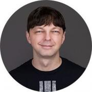
Kyle is the creator of DockerSlim (aka MinToolkit/SlimToolkit), a popular tool to minify, inspect, build, run and debug containers. He's the founder/CEO of AutonomousLayer (aka AutonomousPlane) and he's also the founder/CTO of Slim.AI. He's building an AI agent to automatically fix vulnerabilities in the cloud native applications. Kyle has been building applications and platforms using many different programming languages since the early days of cloud computing. His "50 Shades of Go" is...

Tim has been a Linux geek since the 1.x days, he is currently a TMM at Coder. His days are spent working on Coder’s Cloud Development Environment, tinkering with Linux and Kubernetes, and trying to keep developers all around the world In Flow.
As Distributed Systems Lead at Kwaai, Brian focuses on building decentralized AI training and inference systems with an emphasis on privacy, security, and performance. Previously, he has held key roles at companies and systems integrators architecting cloud-native solutions, automation frameworks, and AI-driven platforms, including a provably accurate medical technology infrastructure. A passionate advocate for open-source technology, Brian co-founded the San Fernando Valley Linux User Group...
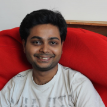
Nithish Raghunandanan is an engineer who loves to build products that solve real world problems in short spans of time. He has experienced different areas of the industry having worked in diverse companies in Germany and India. Apart from work, he likes to travel and interact and engage with the tech community through Meetups & Hackathons. In his free time, he likes to try stuff out by hacking things together.
Nish is a Production Engineer at Meta in the Cloud Foundation team. The scope of his team's work spans running compute workloads in the Cloud for many applications running at Meta. Outside work Nish is also a photographer (https://www.nish.photo). At SCaLE, Nish takes professional headsots at the Open Source Career Day.

Atom is a student at UC Merced pursuing a degree in Applied Mathematics with an emphasis on Computer Science. He is currently the president of UC Merced ACM chapter. He’s interested in cyber security, Linux, programming, and Basketball. He has given talks about PKI, Linux security, Linux installs as the ACM Cybersecurity SIG lead.
Second year student at UC Berkeley majoring in Applied Mathematics and Data Science. Marie has been interested in Cybersecurity for more than 6 years and competed in Cybersecurity competitions. She has taken an interdisciplinary approach to Cybersecurity by taking courses in Quantum Computing, Machine Learning/AI, Python programming, and writing. At Berkeley, she is involved in Machine Learning and Data Science committees and also mentors incoming students interested in Applied Mathematics...
Alok Ranjan is an Engineering Manager at Dropbox, where he leads the storage-platform team, delivering secure, reliable, and cost-efficient storage solutions at scale. With over a decade of experience at companies like VMware, Big Switch Networks, and Cisco, Alok specializes in scalable infrastructure and data encryption technologies. He holds a master’s degree from Carnegie Mellon University and is passionate about mentoring engineers and advancing cloud storage innovation.
Alok is...

Kyle Rankin is a security and infrastructure expert with over two decades of professional Linux experience. He is the author of How To Write A Tech Book, The Best of Hack and /: Linux Admin Crash Course, Linux Hardening in Hostile Networks, DevOps Troubleshooting, The Official Ubuntu Server Book, Third Edition, Knoppix Hacks, 2nd Edition, and Ubuntu Hacks, among other books. Rankin was an award-winning columnist and tech editor for Linux Journal, and speaks frequently on Free and Open Source...
Reza Rassool is the Founder of Kwaai.ai, driving AI democratization through a Personal AI Operating System.
Formerly CTO at RealNetworks, he led their pivot to AI leadership. With a track record of >$1Bn exits, Reza is an award-winning innovator with 27 US patents. His extensive expertise spans computer vision, edge AI, and founding roles at Zya and Widevine Technologies (acquired by Google), and contributions to the development of Lightworks NLE, a Technical OSCAR/EMMY-winning...

Justin Reock is the Deputy CTO at DX (getdx.com), and is an outspoken speaker, writer, and software practice evangelist. He has over 20 years of experience working in various software roles and has delivered enterprise solutions, technical leadership, and community education on a range of topics. After a fifteen year career in software development, Justin now focuses on helping businesses create better throughput by optimizing the developer experience. Much of his work can be found online...
Luke Repko is a passionate engineer with a lifelong curiosity for deconstructing complex systems and understanding how they work. Starting his journey as a customer of Rackspace and an end user of the Nova project, Luke has spent the last decade diving deep into OpenStack and its infrastructure. Now a seasoned Racker, he brings a wealth of hands-on expertise in cloud technologies and their evolution.
Luke’s top 5 Clifton Strengths — Achiever, Analytical, Communication, Learner, and...
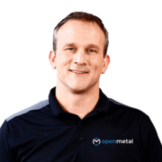
In 2001, Todd and his co-founder Sunil Saxena brought InMotion Hosting online from a data center in Los Angeles. Today, InMotion and a suite of subsidiary brands handle 100,000+ customers with the help of 300+ team members from around the world.
As an open source advocate and ambassador for ongoing usage of OpenStack, Ceph and other key open technologies, Todd once again saw a challenge he wanted to resolve. He wanted to break down the complexity of accessing OpenStack and make it...
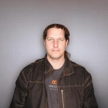
Ben Rockwood is the VP of Engineering & Operations at Mondoo

I hold a bachelor's degree in Literature from the University of California at Santa Barbara and a master's degree in Poetry from Sarah Lawrence College.
Currently, I am a Software Engineer at Meta. I have worked as a developer at UCLA, Sarah Lawrence College, The City University of New York, Zeebox, and Spotify.
I also enjoy cooking, playing the guitar, horology, and taking long walks with my wife and dog.
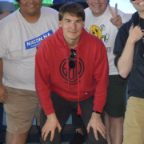
Low level programmer, OS/Zig/Linux dev, Nixpkgs & LLVM committer. Likes to watch 大空スバル (Subaru Oozora).

Alexander is a Principal Security Engineer at Amazon Web Services (AWS), leading RDS security team.
Alexander worked with MySQL since 2000 as DBA and Application Developer. Alexander was working as MySQL principal consultant/architect for over 15 years, started with MySQL AB in 2006 (company behind MySQL database), Sun Microsystems, Oracle and then Percona. He helped many customers design large, scalable and highly available MySQL systems, optimize MySQL performance and improve MySQL...
Éamon is a Senior Principal Field Engineer at Grafana Labs, where he builds and maintains internal and external environments, builds out advanced workshops, provides input on product use-cases and acts as a subject matter expert in some specific areas.
Éamon has done the full rounds of customer-facing tech roles over the years: Support, Education/Training, Professional Services, Solutions Engineering and now Field Engineering, giving him tons of customer insights and viewpoints he...

Amber is a Senior Field Engineer at Grafana Labs, where she focuses on observability solution architecture, building and maintaining complex demo environments and observability workshops, and provides expertise for customer solutions requiring metrics, logs, and Grafana observability tooling.
Amber has a background in infrastructure and monitoring, primarily working in Customer facing roles for Solution Architecture and Customer Success Engineering at Pivotal/VMware, Sysdig...

Vijay Samuel works with eBay's observability platform as its architect. During his time at eBay Vijay has transformed eBay's observability platform into a cloud native offering that is primarily built on top of open source technologies. He loves to code in Go and play video games.
Matthew is an engineering leader focused on building reliable, scalable, and observable systems. Matthew is known for using his breadth and depth of experience to add value in minimal context situations and help great people become great engineers through mentoring. In his spare time, Matthew spends time with his family, helps grow his wife's chocolate business, works on home improvement projects, and reads technical resources to learn and tinker.

Kerim is a senior developer advocate at HashiCorp, where he coaches operators and developers on sustainable infrastructure and orchestration workflows.
Before he joined HashiCorp, Kerim worked on Industrial IoT for the Amsterdam airport and helped museums bring more of their collections online.
When Kerim isn't working, he's either spending time with his daughter, enjoying aerial photography, or baking a cake.
Guillaume Saunier is a professional focusing on the intersection of tech and politics. He is dedicated to helping organizations worldwide make pro-social technological choices. As the Partnerships and Fundraising lead at Octree, he spearheads civic-tech projects like Voca.city, creating sustainable, collective alternatives. Previously Guillaume worked at International Organizations where he was involved with fundraising and donor relations. With a Master's in International Business from...
Anthony Scheller is a seasoned cybersecurity professional with a decade-long track record of success. His journey began at PwC, where he specialized in offensive security, assisting Fortune 500 companies in fortifying their defenses against cyber threats through penetration testing.
Transitioning into the technology sector, Anthony assumed leadership roles (technical & strategic) in security engineering at industry-leading companies including Hulu, Flexport, and Twilio. At Hulu,...

Bruce Schneier is an American cryptographer, computer security professional, privacy specialist, and writer. Schneier is a Lecturer in Public Policy at the Harvard Kennedy School and a Fellow at the Berkman Klein Center for Internet & Society as of November, 2013
Doc Searls is the former editor-in-chief of Linux Journal, where he was on the masthead for 24 years. During that time he did much to establish open source as a Thing, earning a Google-O'Reilly Open Source prize for Best Communicator in 2005. In 2006 he became a fellow with Harvard's Berkman Klein Center and started ProjectVRM, which is all about increasing personal agency in networked markets, and which informed his 2012 book The Intention Economy: When Customers Take Charge. He also co-...
Editor, DITA architect, photographer, and all-around nerd.

I am the Chief Engineer at Veritas Automata, currently focusing on distributed systems, Kubernetes, and cloud-native applications. I am an enthusiastic believer in blockchain technologies, supply chain, cold chain, pharma applications, and trust in automation. I actively work on innovation, following the latest technologies and integrations, including AI and controls in automation.
My current most involving activity is the development of the Hivenet platform for VA, to provide k-native...
Srirama Sharma is a Senior Technical Staff Member (STSM) in IBM Z Systems and is Product Owner of IBM Cloud Infrastructure Center which provides Infrastructure management capability for Hybrid cloud deployments on IBM Z / LinuxONE. He is also the Chief Architect for IBM Cloud Paks on Z, leading cloud-native enablement of Enterprise software stack on IBM Z systems. He has 20+ years IT experience in various systems stack like device drivers, Desktop development contributing to various open...
Paul works at Dropbox improving the logging, tracing, profiling, and error monitoring tools. More recent work includes deploying Grafana Tempo. In his free time, he's focused on using computers more ergonomically by shifting his computer usage to the terminal and his own AI chat TUI, XR display glasses, and voice transcription.
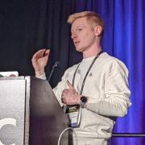
Evan Shortiss is a Developer Advocate at Red Hat, where he helps developers to be successful with cloud-native technologies. He has more than ten years of development experience, with a focus on building web applications and backends using JavaScript ecosystem technologies.

Chach Sikes is a Senior Engineer with the CA Office of Data and Innovation.
Eduardo is an entrepreneur and Software Engineer. He is one of Fluentd project maintainers and creator of Fluent Bit, a lightweight Logs, Metrics, and Traces processor.
Maya is a Product Manager at Microsoft who is passionate about using data to drive product decisions. She has PM experience in Financial Services and Ed-Tech, and is excited to now work on the cloud and open source. Maya holds a Bachelor's degree in Biomedical Engineering and an MBA, both from the University of Virginia. She is a die hard UVA sports fan and loves to try new restaurants and play tennis in her free time.
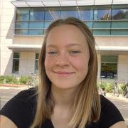
I'm a research software engineer passionate about developing cutting-edge technology to help alleviate real-world problems. I see climate change as one of the major issues threatening humans and life on Earth as a whole, and I want to use my technical skills to enact meaningful change in this area. At the same time, I strive to further develop my skills as a computer scientist, tackling interesting and exciting problems along the way.
Vincent is a Software Engineer based in Long Beach, CA, with over 20 years of experience in payments, e-commerce, and crowdfunding.

Matthew is a seasoned leader with 15 years of experience driving customer, product, and revenue success in pioneering cloud technology companies from seed to C stage. As a founding team builder and operational leader, he consistently delivers results by identifying and navigating nascent markets. Now, Matthew leverages his expertise to develop individuals and companies, guide leaders, and shape new industries. Matthew has tenured experience building businesses and products around cloud OSS...

Greg Spektor is a program management leader, Six Sigma Greenbelt, and AI product strategist with expertise in engineering, product delivery, and operational process re-engineering. With a background in finance and organizational transformation, he specializes in driving efficiency, aligning KPIs with business goals, and advising C-suite leaders on execution strategies.
Currently serving as Product Team Lead at Kwaai, Greg is spearheading the early-stage vision and MVP definition for...

Michael Stahnke is a seasoned engineering executive, having spent the last 15 years working in the development and operational tooling space where also did research and was an author on Puppet’s State of DevOps Reports.
Michael is VP of Engineering at Flox. He was previously in senior engineering leadership at CircleCI and Puppet where he grew engineering teams by 5x or more. He has spent time building high performing teams, organizations and researching engineering effectiveness in...

Masahji Stewart is the Chief Architect and founder of Synctree Inc., transforming ideas into successful product launches for over 15 years. Masahji has led Synctree to deliver high-profile projects across industries like media, healthcare, and finance. Over the last four years, he has directed Synctree’s expansion into cutting-edge AI solutions, helping businesses integrate AI to enhance operations.
With more than 25 years in software engineering and architecture, Masahji is also an...
Sandra Stibbards opened her investigation agency, Camelot Investigations, in 1996. Currently, she maintains a private investigator license in the state of California. Sandra specializes in financial fraud investigations, competitive intelligence, counterintelligence, business and corporate espionage, physical penetration tests, online vulnerability assessments, brand protection/IP investigations, corporate due diligence, and Internet investigations. Sandra has conducted investigations...

Dave Stokes is an open-source software and database fan. He has worked at companies ranging alphabetically from the American Heart Association to Xerox, has three college degrees, enjoys riding his Honda Goldwing motorcycle, lives in North Texas, and started with UNIX in the Version 7 days. He is the author of MySQL & JSON - A Practical Programming Guide, which is available at Amazon.com

Simon is the Director of the CONSUL DEMOCRACY Foundation. A non-profit organisation whose mission is to reinforce the quality, neutrality and credibility of citizen participation worldwide in democratic processes embodying the principles of democracy, independence, open source and free software and knowledge, neutrality, transparency, rule of law and inclusion; as well as manage and contribute to the improvement, development and worldwide expansion of the open...
Scott is a developer with over 20 years of experience in various languages. During that time, the only constant in his development stack has been MySQL. He has a passion for sharing what he has learned on his coding journey so others may learn from his mistakes.
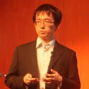
Toshiaki Takahashi has been working on developing a platform for telecom in NEC. He has been providing a virtualization infrastructure using OpenStack and Kubernetes for high-availability services.
He is a core developer of OpenStack Tacker community and has been contributing to the community in order to achieve Management and Orchestration functions.
He has also been contributing to the O-RAN Software Community in order to expand the use of Management and Orchestration functions...

Zubair Talib is a seasoned technology entrepreneur with over 20 years of experience in AI and enterprise software. He has driven the development of innovative AI solutions, including voice-based restaurant ordering systems and conversational AI for recruitment. Zubair is currently the Executive Director at Celara, a leading technology services company specializing in building teams and solutions with a focus on AI, machine learning, and enterprise software.
Zubair has served as CTO...
Roy Talyosef is a founding engineer at Kodem, a company specializing in application security solutions. Prior to joining Kodem, he was part of the Vulnerability Research team at NSO Group, where he contributed to the development of the Pegasus spyware. With extensive experience in identifying and exploiting software vulnerabilities, Talyosef focuses on enhancing security measures in cloud-native and distributed systems.
Ryan Tam is a Data Scientist and Software Developer for Caltech's Seismological Laboratory. He develops software workflows that utilize machine algorithms to make earthquake predictions from waveform data. He also has a background in computer vision and biomedical engineering, having used deep learning for disease diagnostics. Ryan's interests include cloud computing, deep learning, software engineering, containers, and infrastructure as code.
Proud to lead a top-notch European team building multi-award winning cloud platform on OpenStack, Kubernetes and Ceph. Sardina FishOS is the chosen cloud platform for customers in telco, finance, banking, government, service providers, research and academia.
__q_itok=f4vdMmCX.jpg)
Alkin Tezuysal is the Director of Services at Altinity Inc. He has extensive experience in open-source relational databases, working in various sectors and large functions. With over three decades of industry experience, he has led global operations teams for MySQL customers and users. He's a known speaker at worldwide open-source database events.
His recent achievements extend into open-source communities: He was awarded Most Influential in Database Community 2022 by The Redgate...

Shaun has spent decades working in the Postgres ecosystem, specializing in architecture and high availability. His "PostgreSQL High Availability Cookbook" serves as a treatise to the lessons he learned over that time. Perhaps you've read something from his PG Phriday blog series over the years?
Currently he serves as a Postgres Architect at pgEdge, striving to help make Postgres the distributed cluster-aware platform he knows it can be!
Joe Thompson's IT career is near the end of its third decade. He's been a Linux user since 1998, a professional sysadmin since 2001, and part of the cloud-native community since 2014. He's spoken at KubeCon, Cloud Native Rejekts and several local meetups and enjoys showing how well-known tools can help with new platforms.
Just a guy who loves building things.
%20(2)__q_itok=3XFABHYD.jpg)
Kennedy Toomey is a Security Advocate at Datadog, specializing in application security. Previously she was an Application Security Engineer where she spent her time working with developers to help fix vulnerabilities and write more secure code.
Aleksey Tsalolikhin started his career in system administration at a local ISP (EarthLink) in the mid-nineties. Aleksey's mission is increasing the productivity and quality of life (and prosperity) of IT Operations practitioners through effective training in excellent technologies. Aleksey is a member of the UNIX Users Association of Southern California (UUASC) and the Association for Computing Machinery.

Margaret Tucker is a Policy Manager at GitHub working on issues including intermediary liability, copyright, and open source security policy. Margaret is passionate about advocating for developers' interests to policymakers and hearing from developers about what policy issues matter to them. Prior to joining GitHub, Margaret was a Policy Fellow serving the Office of Science and Technology Policy and also worked as a Research Associate for Future Tense, a section of Slate covering the...

Tanja is a Software Engineer with a passion for solid software architectures and smooth user experiences.
She’s always eager to learn and share her knowledge.
She's currently working on Nix-based developer tooling at Flox, where she's building FloxHub — a platform that enables developers to share reproducible environments.
With her background in web development, she has been advocating for web accessibility since 2016, working to make the web a more inclusive...

Ildikó is working for the Open Infrastructure Foundation as Director of Community. As part of her role, she is the Community Manager for the StarlingX open source distributed cloud project and a co-leader of the OpenInfra Edge Computing Group. Ildikó has been contributing to projects like OpenStack, Anuket and State of the Edge for over 10 years with focus areas of Edge Computing, Telecommunications and NFV. She is an evangelist of open collaboration and is using her experience to help...
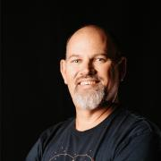
By the late-1990s Ken was building customized Linux distributions for a variety of workloads, from server infrastructure in the data center to globally distributed high-performance computing clusters in the pharmaceutical and financial sectors. Always having a passion for the Linux desktop, he spent the past 15 years working in engineering and engineering management roles on the Ubuntu Desktop team at Canonical.

Xpaul acquired his nickname in the late 1900s at dot-com incubator Idealab! while still pursuing undergraduate studies at Caltech.
The Internet was all the rage, compiling X11 frame buffer drivers on Linux for laptops was the new hotness, and the apps of the time were X11 widgets like xterminal, xcalc, and x-googly-eyes, so when it turned out there was already a "paul" on the qmail server, "xpaul" was born.
Reared by ethical hackers, he since developed,...

Adriana Villela is a public speaker, maintainer of the OpenTelemetry End User SIG, blogger, host of the Geeking Out Podcast, CNCF Ambassador (2023-present), and HashiCorp Ambassador (2022-present). By day, she is a Principal Developer Advocate at Dynatrace, with a focus on Observability and Platform Engineering. By night, she climbs walls. She also loves capybaras.
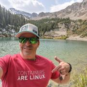
Sagy Volkov is the former Performance Architect of the OpensShift Container Storage (OCS, now ODF) in red hat. Prior to that he ran the performance engineering group and the enterprise advocates group at ScaleIO (Now Dell PowerFlex) and also architected the ScaleIO storage appliance. Before that he was part of Greenplum's performance group and one of the architects of the DCAv2. He is now with Lightbits Labs as a distinguished performance architect concentrating on NVMe/TCP performance...
Max is a Security Researcher for Semgrep and a volunteer for Pacific Hackers Association. He enjoys rsearching creative ways to keep software secure and private. He has spoken previously at Pacific Hackers Conference and RSA Conference, and also organizes the Pacific Hackers CTF as an opportunity to share hacking knowledge and experience with the community.

David is an AI/ML Engineer at DigitalOcean, where he’s dedicated to empowering developers to build, scale, and deploy AI/ML models in production environments. David brings deep expertise in building and training models for applications like NLP, data visualization, and real-time analytics. His mission is to help users build, train, and deploy AI models efficiently, making advanced machine learning accessible to developers of all levels.
I also have a background in storage drivers/...
__q_itok=17PbnK2l.jpg)
Angelina is a software engineer on Micorosoft's Linux Emerging Technologies team.

My dream is a Los Angeles where universal basic mobility is realized by a seamless network that eliminates barriers to meeting needs and pursuing desires. I became interested in Transportation after returning to Los Angeles following six months living in Birmingham, UK. I traveled all over Europe with no car, but had trouble traveling a few miles in Los Angeles. When I found out my IT job was being eliminated, I returned to UCLA for a Master's in Transportation Planning. After a decade...
olaph considers himself to be extremely lucky to have gotten involved with open source software, and more specifically the OpenStack project somewhere around the Essex release. As a terrible developer, he is grateful for the fact that administrators and operators are still required! olaph is always looking for an excuse to play putt-putt or pinball.
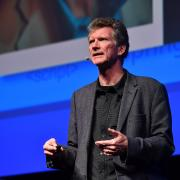
Stephen is a principal program manager in the Azure Office of the CTO and adjunct faculty at Carnegie Mellon University. He has worked with open source software in the product space for 30+ years. He has been a technical executive, a founder and consultant, a writer and author, a systems developer, a software construction geek, and a standards diplomat. Developing software engineering learning experiences for students in the natural lab of well-run open source projects is an area of deep...

Mandi Walls is Technical Community Manager at Chef. For Chef, she helps organizations increase their effectiveness using configuration management and modernizing IT practices. She is a long-time sysadmin focusing on large complex web systems.

Kevin Wang is the founder of Mentors in Tech (MinT), a program that helps overlooked tech students at smaller, less well known, accessible and affordable colleges navigate and launch their careers through structured industry mentorships, integrated open-source capstone projects, and tailored recruitment.
MinT’s work has been recognized as one of the 20 Promising Practices to Advance Quality, Equity, and Success in Community College Baccalaureate Degree Programs by the Community College...
Shirley is a software engineer at Grafana Labs working on solutions to facilitate observability. She is passionate about test code, pair programming and believes in facilitating communication through listening, empathizing and clear and understandable explanations. Outside of work, she enjoys bike riding, knitting, and baking.
Hazel spends her days working on building out teams of humans as well as the infrastructure, systems, automation, and tooling to make life better for others. She’s worked at a variety of companies, across a wide range of tech, and knows that the hardest problems to solve are the social ones. Hazel currently serves as a Director on the board of the Haskell Foundation, as a Fellow of the Nivenly Foundation, and is fondly known as the Infrastructure Witch of Hachyderm (a popular Mastodon...
Erik Wessel is a graduate student and PhD candidate at the Department of Physics at the University of Arizona. He works in the numerical relativity group of Professor Vasileios Paschalidis. He has received NASA's FINESST fellowship to support his work on developing a neutrino-transport code for modeling binary neutron star mergers. Erik is the lead author on two publications investigating the potential for instabilities in massive accretion disks to produce gravitational wave signals...
Scott Williams is a senior DevOps Engineer at University of California (previously Azusa Pacific University and Claremont McKenna College). He contributes to a number of open source software projects and Linux distributions and is an Ambassador for the Fedora Project, representing Fedora at SCaLE since 2010.

Mark Wong is a Software Development Engineer at EDB and is a PostgreSQL Major Contributor. He first introduced himself to the PostgreSQL community in 2003 with open source benchmarking kits and performance data. Since then, he has continued to contribute to various aspects of the community such as a Google Summer of Code mentor, Conference Organizer, Portland PostgreSQL Users Group Co-Organizer, PostgreSQL Fundraising Group Member, and a Director on the Board of the United States PostgreSQL...
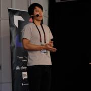
I like to hack on systems software.
Gülçin started working with Postgres at a startup company in 2012 and was amazed at how powerful Postgres truly is! Over the years, she has actively contributed to the Postgres community by organizing conferences, delivering talks, and engaging as a dedicated community member. In recognition of her commitment, Gülçin was elected to the PostgreSQL Europe Board in 2017.
Fueled by her passion for PostgreSQL automation and cloud technologies, Gülçin took on the role of Cloud Services...

Tom Yin is a seasoned technology executive specializing in networking, telecommunications, and business development, launching several networking businesses. Here's an overview of his journey:
- Principal and managing director of TJTC LLC, provides consulting advice and solution development to investment institutions and startups. Showcased Multicloud networking solution using SONIC at ONE Summit. Please see...
Paul Yu is a Developer Advocate at Microsoft focusing on cloud native technologies and the Kubernetes landscape. Paul has well over a decade of industry experience working as a Software Engineer and Solution Architect. He is passionate about promoting cloud native and sustainable solutions to help organizations optimize processes and workflows.
__q_itok=SaLm5azM.png)
PhD Student at the University of California Santa Cruz
Software engineer, Ph.D. student, and father.
I am a NixOS enthusiast, which has led me to rethink basic Linux primitives.
Jimmy Zelinskie is a software engineer and product leader with the goal of empowering the world through the democratization of software through open source development. He's currently the CPO and cofounder of authzed where he's focused on bringing hyperscaler best-practices in authorization software to the industry at large.
At CoreOS, he helped pioneer the cloud-native ecosystem by starting and contributing to many of its foundational open source projects. After being...
Anita Zhang is the software engineering manager of Meta's Linux Userspace team. Her team connects Meta's infrastructure with the open source community. She is active on the systemd project and continues to support systemd at Meta as part of their userspace efforts.